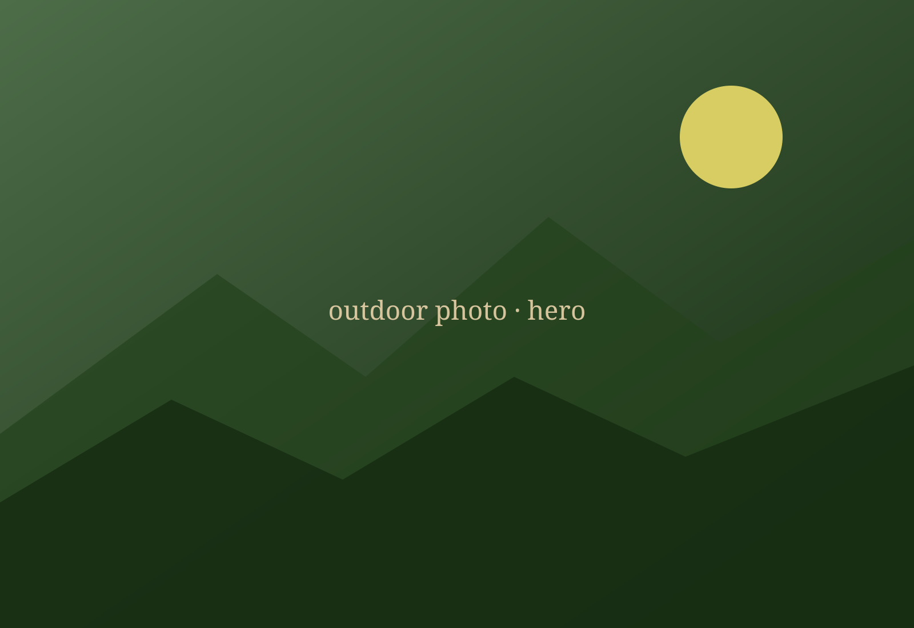
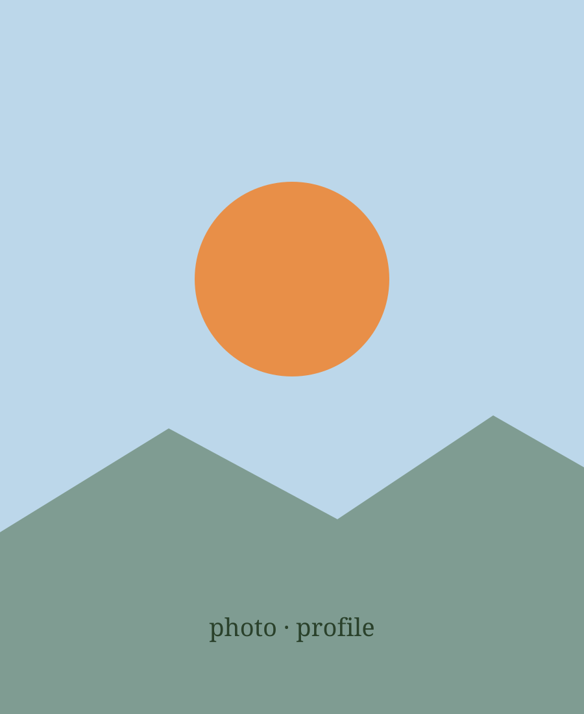
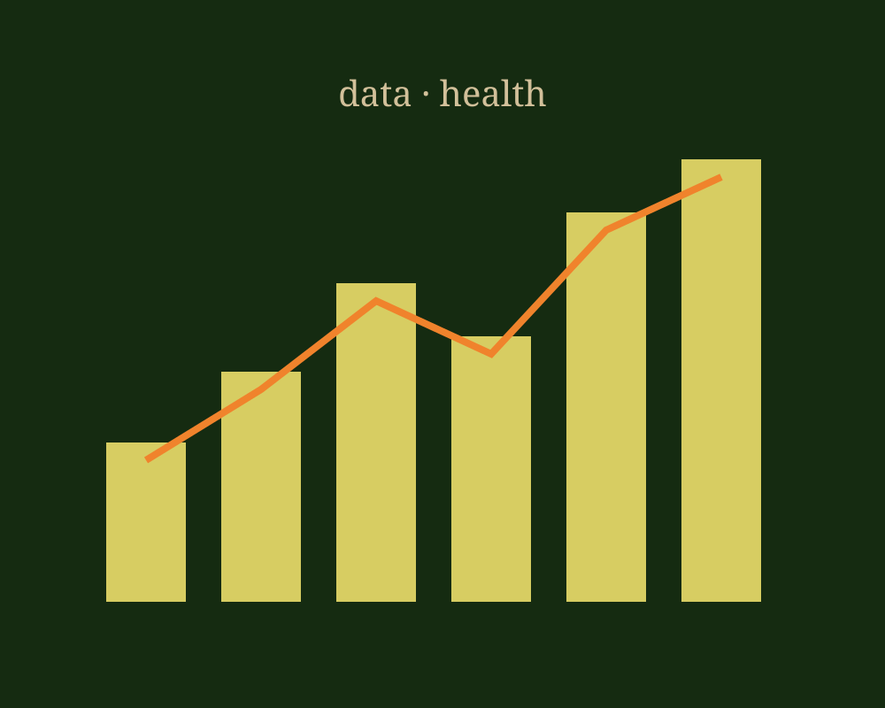
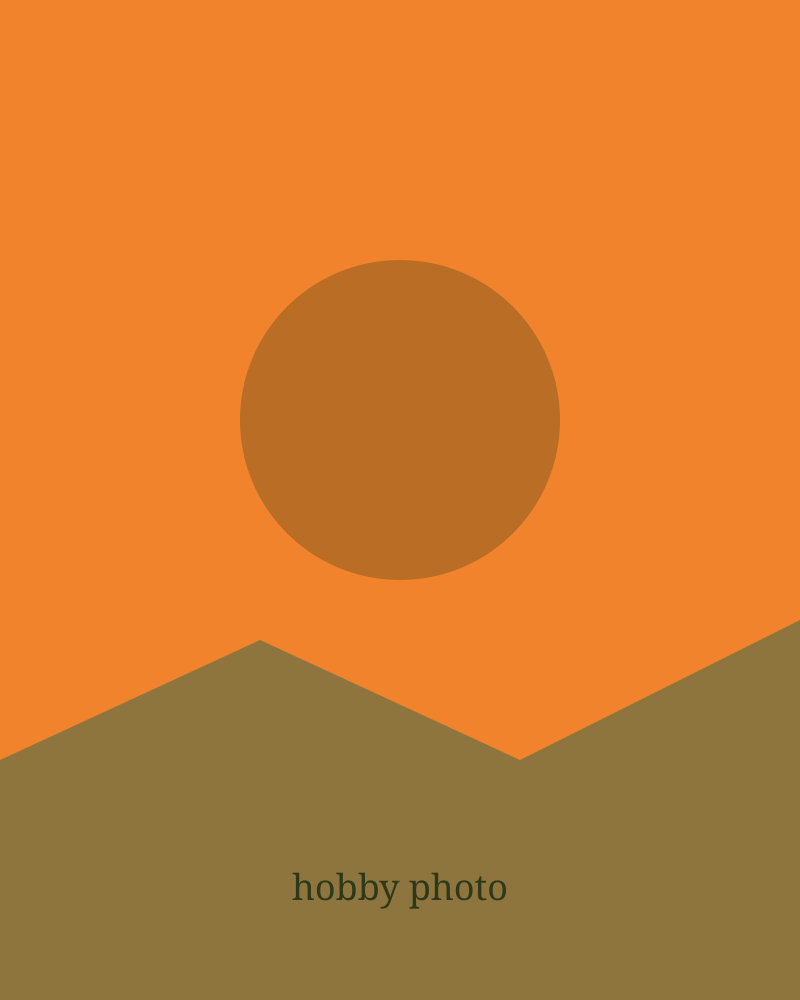
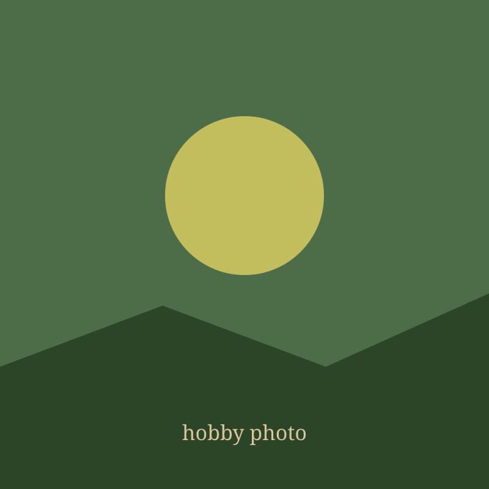
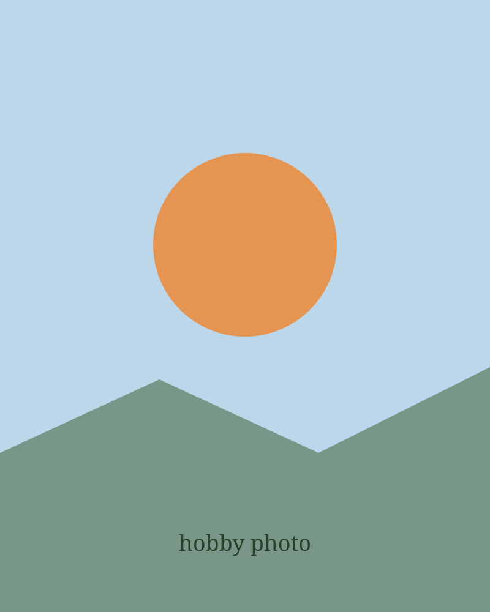

Criativa, analítica e esportiva — usando dados para alavancar a saúde e o bem-estar. Creative, analytical and sporty — using data to boost health and well-being.
Quem sou
About me
Meu nome é Emily Gabriela Tsen. Sou baseada no Brasil, em uma cidade pequena chamada Marília. Tenho 19 anos e amo ajudar as pessoas através da minha criatividade. My name is Emily Gabriela Tsen. I'm based in Brazil, in a small town called Marília. I'm 19 years old and I love helping people through my creativity.

Três naturezas, uma missão Three natures, one mission
Resolvo problemas com imaginação — design, artesanato e ideias fora da caixa. I solve problems with imagination — design, crafts and out-of-the-box ideas.
Transformo dados em decisões — Big Data, padrões e curiosidade sem fim. I turn data into decisions — Big Data, patterns and endless curiosity.
Vivo em movimento — surf, trilha, yoga e dança mantêm corpo e mente em equilíbrio. I live in motion — surf, hiking, yoga and dance keep body and mind in balance.
Dados para a saúde Data for health
Saúde não se resume a uma busca por cura, mas em manter uma vida plena. Minha maior aspiração é usar a tecnologia e os dados para impactar as pessoas ao meu redor — cuidando do corpo, da mente e da alma em equilíbrio. Health isn't just the search for a cure, but a full life. My biggest aspiration is to use technology and data to impact those around me — caring for body, mind and soul in balance.

Minha jornada My journey
Hobbies & esporte Hobbies & sport



Raízes Roots
Cresci dentro de 3 culturas (taiwanesa, brasileira e estadunidense), e sou apaixonada por cada oportunidade que essas diversidades me agregam. Tive o privilégio de aprender o português, o inglês, o espanhol e a honra de tirar minha nacionalidade americana, além da brasileira. Graças aos meus pais, amo conhecer novas culturas e costumes que fazem desse mundo um lugar tão diversificado. I grew up in 3 cultures (Taiwanese, Brazilian and American), and I'm passionate about every opportunity these diversities give me. I had the privilege of learning Portuguese, English, Spanish and the honor of holding American nationality alongside the Brazilian one. Thanks to my parents, I love getting to know new cultures and customs that make this world such a diverse place.